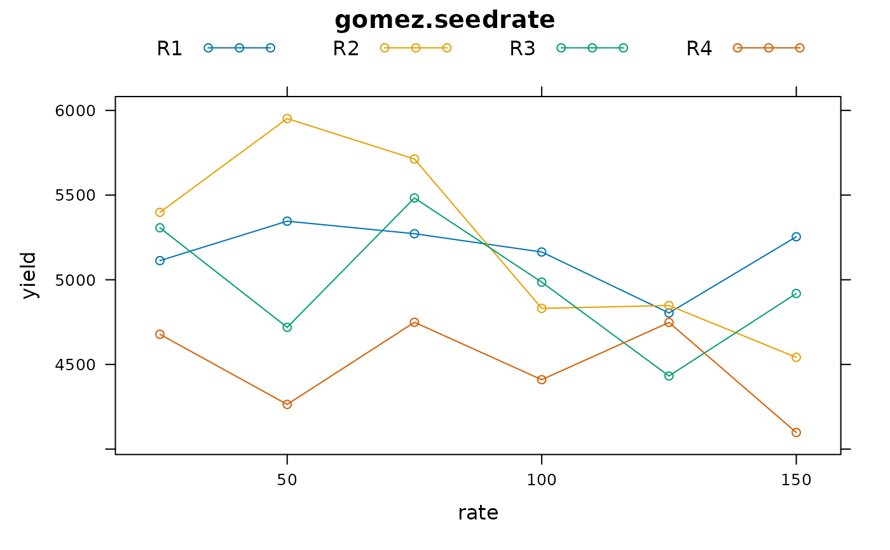
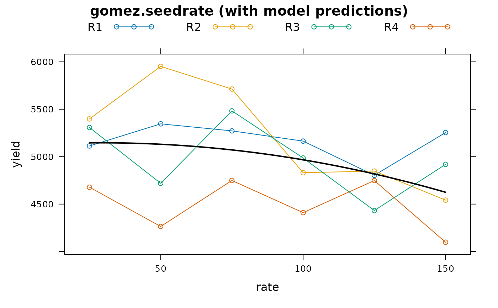

RCB experiment of rice, 6 densities
gomez.seedrate.RdRCB experiment of rice, 6 densities
Format
A data frame with 24 observations on the following 3 variables.
ratekg seeds per hectare
reprep (block), four levels
yieldyield, kg/ha
Details
Rice yield at six different densities in an RCB design.
Used with permission of Kwanchai Gomez.
Source
Gomez, K.A. and Gomez, A.A. 1984, Statistical Procedures for Agricultural Research. Wiley-Interscience. Page 26.
Examples
library(agridat)
data(gomez.seedrate)
dat <- gomez.seedrate
libs(lattice)
xyplot(yield ~ rate, data=dat, group=rep, type='b',
main="gomez.seedrate", auto.key=list(columns=4))

# Quadratic response. Use raw polynomials so we can compute optimum
m1 <- lm(yield ~ rep + poly(rate,2,raw=TRUE), dat)
-coef(m1)[5]/(2*coef(m1)[6]) # Optimum is at 29
#> poly(rate, 2, raw = TRUE)1
#> 29.148
# Plot the model predictions
libs(latticeExtra)
newdat <- expand.grid(rep=levels(dat$rep), rate=seq(25,150))
newdat$pred <- predict(m1, newdat)
p1 <- aggregate(pred ~ rate, newdat, mean) # average reps
xyplot(yield ~ rate, data=dat, group=rep, type='b',
main="gomez.seedrate (with model predictions)", auto.key=list(columns=4)) +
xyplot(pred ~ rate, p1, type='l', col='black', lwd=2)
